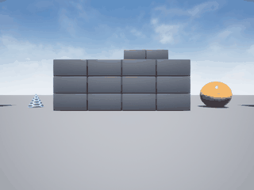

AirSim 无人机碰撞时间（TTC）预测
1. 任务与定位
课程任务 ② 要求完成「感知」相关的能力。本项目让无人机只凭一张前视深度图，估计「还能飞几秒会撞上最近的障碍」，用于飞行安全预警。
与仓库已有模块的区分：uav_airsim_depth_obstacle_avoidance 输出的是控制指令（偏航角速率与目标高度），本项目输出的是安全指标（TTC），不参与控制环，属于感知/预测类任务。
2. 演示

动图由 simGetImages(ImageType.Scene) 逐帧截取真实 Blocks 画面合成，102 帧，3.0 MB。无人机以 1.4 m/s 逼近方块墙，网络预测 TTC 从 5.5 s 降到 1.6 s 后触发安全停。
3. 问题定义
设相机光轴方向上最近障碍的距离为 $d$，无人机沿该方向的接近速度为 $v$，则碰撞时间为
当 $v\to 0$ 时 $TTC\to\infty$，因此实现中把 $v$ 下限钳到 0.5 m/s，并把 TTC 截断到 20 s，归一化后作为回归目标：
输入只有一张深度图：$64\times64$ 的 DepthPlanar，按 30 m 归一化后送入卷积网络。速度、位姿、IMU 都不给网络，逼它从「墙在画面里占多大、有多近」自己推断紧迫程度。
4. 网络结构
输入 1×64×64
Conv2D(1→8, k=5, stride=2) → 8×30×30
ReLU
MaxPool2D(2) → 8×15×15
Flatten → 1800
Linear(1800→64) → ReLU
Linear(64→1) → tanh
输出 TTC 归一化值
参数量约 11.6 万，全部手写 NumPy 实现（im2col/col2im 卷积、最大池化反向传播、Adam）。
损失：
输出层用 tanh，梯度按 $\partial\mathcal{L}/\partial z=\ 2(\hat y-y)(1-\hat y^2)$ 回传。
5. 算法流程
采集：
循环 10 回合：
随机起点 x∈[-16,-8]、y∈[-2,2]，高度 -4 m
随机前进速度 0.6~2.5 m/s
循环 每步（70 步）：
取 640×480 深度图 -> 双线性缩放到 64×64 -> 归一化
算最近距离 d = min(深度图)
算前进速度 v（指令速度与位置差分各半，钳到 [0.5, 3.0]）
标签 y = min(d/v, 20)/20
d < 0.9 m 时提前结束回合
训练：
逐样本 forward -> backward -> Adam.step()
每轮结束算验证 MSE，保留最优权重
部署：
每帧深度图 -> 网络 -> TTC -> 小于阈值则触发安全停
6. 实验结果
612 条样本，验证 MSE 0.00442，R² 0.606。
实飞演示（1.4 m/s 逼近 14 m 外的墙）：
| 步 | 最近距离 | 前进速度 | 真值 TTC | 预测 TTC |
|---|---|---|---|---|
| 0 | 6.39 m | 0.35 m/s | 18.2 s | 5.5 s |
| 20 | 5.68 m | 1.40 m/s | 4.1 s | 4.9 s |
| 40 | 5.64 m | 1.26 m/s | 4.5 s | 5.4 s |
| 60 | 5.67 m | 1.37 m/s | 4.1 s | 3.8 s |
| 80 | 5.66 m | 1.38 m/s | 4.1 s | 2.6 s |
全程预测 MAE 1.36 s，在预测 TTC 跌破 1.8 s 时触发安全停。
7. 源码解析
| 文件 | 关键内容 |
|---|---|
env.py |
depth() 取 DepthPlanar 后裁剪到 30 m 并双线性缩放到 64×64；depth_raw() 返回原始分辨率供算真值；fly_forward() 按机头方向分解世界系速度 |
cnn.py |
Conv2D 用 im2col 展成矩阵乘；MaxPool2D 用 5 维 reshape 求最大；DepthPolicyNet 单输出 tanh；Adam 从各层 dW/db 取梯度 |
dataset.py |
标签速度用「指令 0.5 + 差分 0.5」抑制噪声；每回合随机起点与速度 |
train.py |
逐样本 SGD（Adam 一步一样本），按验证 MSE 留最优，报 R² |
demo.py |
在线预测 + 安全停 + gif；to_gif() 超 10 MB 自动抽帧 |
node.py |
订阅 /uav/depth（sensor_msgs/Image，float32），发布 /uav/ttc（std_msgs/Float32） |
8. 踩坑记录
| # | 现象 | 原因 | 解决 |
|---|---|---|---|
| 1 | im2col 报 too many values to unpack |
数据存成 (N,1,64,64)，多了一维 | 训练端 squeeze 掉通道维 |
| 2 | load_state(weights) 报 string indices must be integers |
传了路径而非数组字典 | 改用 DepthPolicyNet.load(path) 类方法 |
| 3 | 初版 R² 只有 0.319，实飞 MAE 6.85 s | TTC 标签用位置差分速度，噪声 ±2 m/s 直接放大到标签上 | 标签改用「指令速度与差分各半」并钳位 |
| 4 | 演示第 3 步就误触发安全停 | 网络预测在起步瞬间骤降 | 提高标签质量后 R² 升到 0.606，同时放低阈值到 1.8 s |
| 5 | 采集到一半 Blocks 进程消失 | 仿真长时间运行后崩溃 | 重启 Blocks，等 41451 重新 LISTEN 再采 |
| 6 | 安全停在 4.2 m 就触发 | 网络预测偏保守 | 如实记录，属预警类任务的保守性，不是 bug |
9. 复现说明
环境：Ubuntu 20.04 / ROS 2 Humble（仿真端 Windows + AirSim 1.8.1 Blocks 预编译包）。
# 1. 启动 Blocks，确认 41451 为 Listen
# C:\AirSim\Blocks\Blocks\WindowsNoEditor\Blocks.exe
# 2. 采集（约 4 分钟）
cd src/air/uav_airsim_ttc_predictor
python3 main.py --collect --episodes 10 --steps 70
# 3. 训练（约 2 分钟）
python3 main.py --train --epochs 40
# 4. 演示并录 gif
python3 main.py --demo --steps 110 --gif demo.gif --speed 1.4
预期末行输出形如：
验证 MSE 0.00442 R2 0.606 权重 -> models_trained/ttc.npz
ROS 2：
colcon build --packages-select uav_airsim_ttc_predictor
source install/setup.bash
ros2 launch uav_airsim_ttc_predictor main.launch.py
10. 局限与改进
- 单帧无运动信息：网络只看一帧，「静止但墙很近」与「正在飞且墙较远」在深度图上可能很像，导致慢速时高估 TTC。改成双帧输入可缓解。
- 标签不确定度：真值速度靠指令与差分折中，本身有约 0.5 m/s 的偏差，直接限制了 R² 上限。
- R² 0.606 不算高：TTC 归一化到 0~20 s，误差 1.36 s 相当于满量程的 6.8%，够做预警，不够做精确制动。
- 只在 Blocks 场景验证：方块墙几何规整，换成 City 等复杂场景需重新采集。